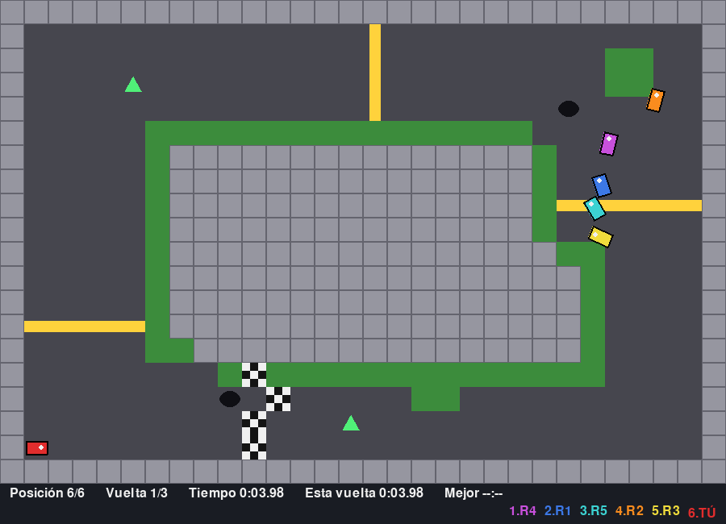

- 3 vueltas contra 5 rivales con IA en 3 pistas: Óvalo, Chicanas y Gran Premio.
- Física con aceleración, freno y derrape. El pasto frena y los muros rebotan.
- Ítems en la pista: turbo (flecha verde) y aceite (mancha negra).
- Posición en vivo, cronómetro y mejor vuelta guardada. Sonidos hechos con matemáticas.
Necesita: Python 3 + pygame · Linux, Windows y Mac
⬇ Descargar .zip (11 KB) 🎮 Jugar en el navegador▶️ Cómo jugar
- Descarga y descomprime el zip.
- Instala pygame:
pip install pygame - Corre
python3 carreras.py(en Windows:python carreras.py; en Linux/Mac también sirve./jugar.sh).
🎮 Controles
| Flecha arriba | acelerar |
| Flecha abajo | frenar |
| Izquierda / derecha | doblar |
| 1 / 2 / 3 | elegir pista |
| ENTER | largar |
| R | de nuevo |
| M | menú |
| ESC | salir |
⌨️ Cambiar los controles
Abre controles.txt (está junto a carreras.py) y cambia la tecla después del =. Así viene de fábrica:
acelerar = up frenar = down izquierda = left derecha = right pista1 = 1 pista2 = 2 pista3 = 3 empezar = return reiniciar = r menu = m salir = escape
Nombres válidos: letras (a, b...), flechas (up, down, left, right), space, return, tab, left shift, left ctrl y números. Si escribes una tecla que no existe, el juego avisa y usa la de siempre.
✏️ Haz tu propio nivel
Los niveles están en la lista PISTAS dentro de carreras.py (dibujos de 30 x 20 letras). Son dibujos de texto: cada letra es un cuadrito.
# | muro |
. | asfalto |
g | pasto (frena) |
1-9 | checkpoints en orden |
M | meta |
S | largada (pon al menos 6) |
T | turbo |
O | aceite |
Edita el dibujo, guarda, y corre: python3 carreras.py
- Copia una pista, cámbiale el dibujo y el nombre, y ponle los
puntospor donde van a manejar los rivales (columna, fila;.5es el centro del cuadrito). - Los checkpoints tienen que cruzar la pista completa, si no los autos se los saltan.